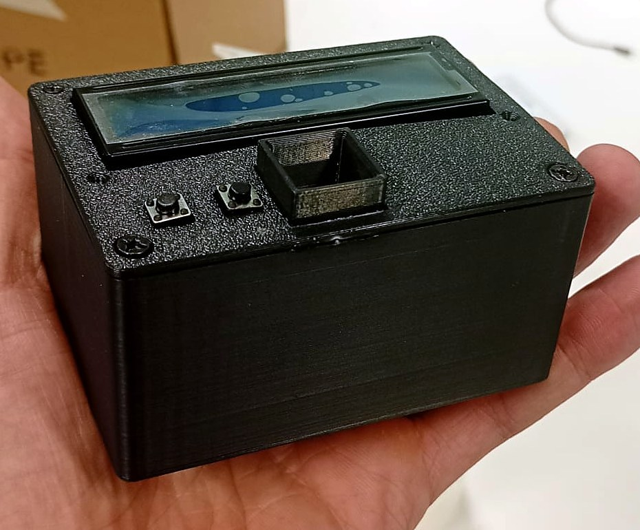
PRATICO 3 is a pocket colorimeter. It reads the colour that the FreshWater Watch (FWW) nitrate and phosphate test kits produce and converts it into a concentration in mg/L. This guide takes you from the parts to an instrument that has passed its acceptance test and is ready for calibration. Calibration and field use are described in the separate PRATICO 3 User Guide.
A technician comfortable with a soldering iron and with typing commands into a computer. All design files, firmware and documentation are open source (GPL-3.0) at github.com/LowCostSensor/PRATICO-sensor. You do not need to know Python or Linux: every command is printed in full. Where a command must be typed on the Raspberry Pi, it is shown in a grey box like this:
pratico-selftest # text after # is a comment: don't type it3D printing: a few hours, unattended. Raspberry Pi set-up (needs internet): 45 – 60 min. Assembly and wiring: about 1.5 h. Tests and acceptance: 20 min.
| Qty | Part | Notes |
|---|---|---|
| 1 | Raspberry Pi Zero 2 W | with a 2 × 20 male header (the “Zero 2 WH” has it already soldered) |
| 1 | microSD card, 8 GB or more | a good brand (class A1); cheap cards fail in heat |
| 1 | USB power bank, 5 V, ≥ 1 A, + micro-USB cable | for the field; a 5 V phone charger works on the bench |
| 1 | Adafruit LTR‑329 light sensor breakout | I²C address 0x29 |
| 1 | LED, 5 mm, green 525 nm | with a flange (rim) at the base |
| 1 | LCD 1602 with I²C backpack | PCF8574 backpack, address 0x27 (e.g. Freenove I²C LCD 1602) |
| 2 | Tactile switch, 6 × 6 mm | OK and MODE buttons |
| 1+ | Cuvette, 10 mm light path | 12.5 × 12.5 × 46 mm outside, 1.5 – 2 mL; order spares |
| 5 | M3 heat-set insert, Ø 4 × 6 mm | 3 in the optical block, 2 in the base |
| 17 | Screws: 3 × M3×8 countersunk 2 × M3×6 countersunk 4 × M2×10 countersunk 2 × M2×6 · 4 × M2×5 · 2 × M2×4 | optical block → base, from below lid → front posts lid → LCD corners → base posts sensor → block · Pi → standoffs · button carrier → lid |
| 14 | Dupont jumper wire, female–female, 10 cm | sensor 4, LCD 4, buttons 4, LED 2 |
| ≈60 g | Black matte PLA filament | the inside of the box is part of the optics |
Recommended, optional: an LED driver (NPN transistor such as BC547 or 2N2222, 100 Ω and 1 kΩ resistors) or at least a 100 Ω resistor in series with the LED. It makes the LED brightness less dependent on temperature.
Ordering for several instruments: buy 10 – 20 % spare cuvettes, LEDs, switches, Dupont wires and SD cards. Cuvettes get scratched and are the part you will replace most often.
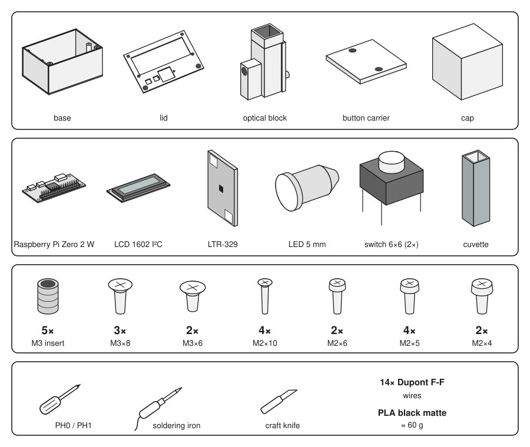
The print files are in the repository folder hardware/pratico3/cad/:
pratico3_plate_X1C.3mf: all five parts on one plate, already oriented (Bambu Lab X1 Carbon). Other printers: open it in your slicer or use the STEP/STL files.| Setting | Value |
|---|---|
| Material | Black matte PLA only. Light reflected by a glossy or coloured surface reaches the sensor and changes the readings. |
| Nozzle / layer | 0.4 mm / 0.20 mm |
| Walls / top–bottom | 4 wall loops / 5 layers |
| Infill | 15 % gyroid |
| Supports | none |
Push a cuvette into the well of the optical block. It must slide all the way down without play (0.25 mm clearance per side). It must not wobble.
Do not sand the well. Sanding makes it shiny and shiny walls reflect light. If the cuvette is too tight, reprint the block with a larger clearance (parameter in pratico3_enclosure.py).
Heat. PLA starts to soften at about 55 °C, a temperature that a closed vehicle or a dashboard in the sun easily reaches. The instruments must be kept in the shade and never left in a parked car. For very hot deployments, a matte black PETG print is more heat-resistant; check the cuvette fit again if you change material.
Do this on the bare Raspberry Pi, before assembly, while the parts are printing. You need internet access only now; in the field the instrument works without any network.
| Hostname | a unique name per instrument, e.g. pratico-01, pratico-02 … |
| Username / password | username fww (used in this guide) and a password of your choice. Write it on the acceptance sheet (Section 8), keep it safe. |
| Wireless LAN | the Wi-Fi network you will use for the set-up; country SL |
| Locale | time zone Africa/Freetown, your keyboard layout |
| Services | Enable SSH (password authentication) |
Open a terminal (Windows: PowerShell; macOS: Terminal) on a computer on the same Wi-Fi network and type, with your hostname:
ssh fww@pratico-01.localAnswer yes the first time, then type the password (nothing appears while you type). The prompt changes to fww@pratico-01:~ $. All the commands below are typed there.
If pratico-01.local is not found, find the Pi's IP address in your router's list of connected devices and use ssh fww@192.168.x.x instead.
sudo apt update
sudo apt full-upgrade -y
sudo apt install -y i2c-tools pipx python3-devOpen the boot configuration file:
sudo nano /boot/firmware/config.txtMake sure these two lines are present (add them at the end if they are not):
dtparam=i2c_arm=on
dtoverlay=i2c-gpio,bus=3,i2c_gpio_sda=17,i2c_gpio_scl=27Save with Ctrl+O, Enter, exit with Ctrl+X. The first line turns on the bus of the light sensor (bus 1), the second creates the bus of the display (bus 3, on GPIO 17 and 27).
If an update installed a new kernel, the system may still be finishing it. Never cut the power while a command is running.
pipx install pratico-sensor
pipx ensurepath
sudo rebootReconnect after about a minute (ssh fww@pratico-01.local) and check the version:
pratico-selftest --versionIt must print PRATICO 3 firmware 3.0.0 (or a later version). The firmware installs four commands:
| Command | What it does |
|---|---|
pratico-selftest | hardware self test |
pratico-cal | calibration (User Guide) |
pratico-field | the field program with buttons and display (normally started automatically) |
pratico-service install | uninstall | status | start the field program at every power-on |
Leave the boot service for later (Section 7). Shut down before assembling:
sudo poweroffWait until the green light on the Pi stops blinking, then unplug it.
The step numbers match the large numbers on the drawings. Read the whole step before you start it.
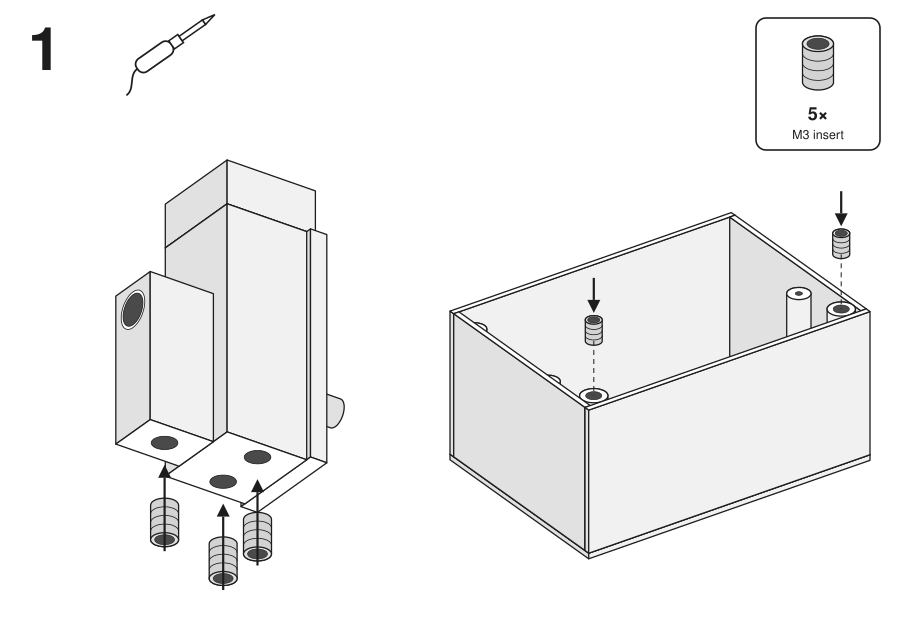
Parts: 5 × M3 insert, optical block, base
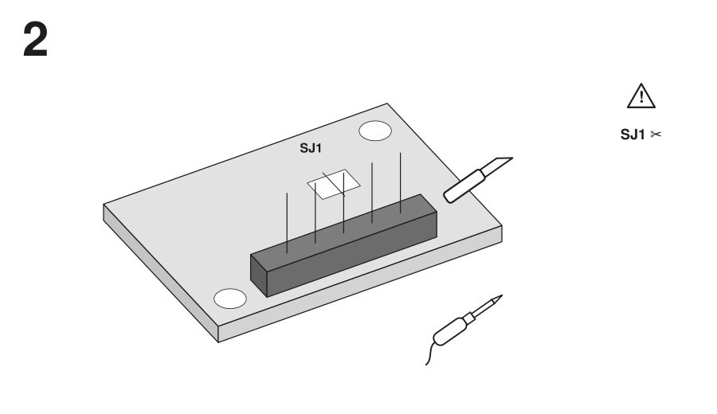
Parts: LTR‑329 board and its header
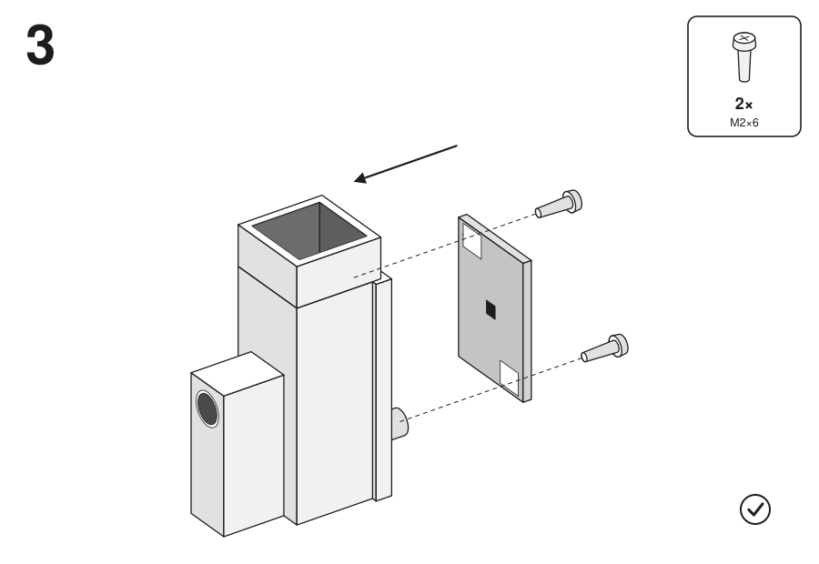
Parts: 2 × M2×6
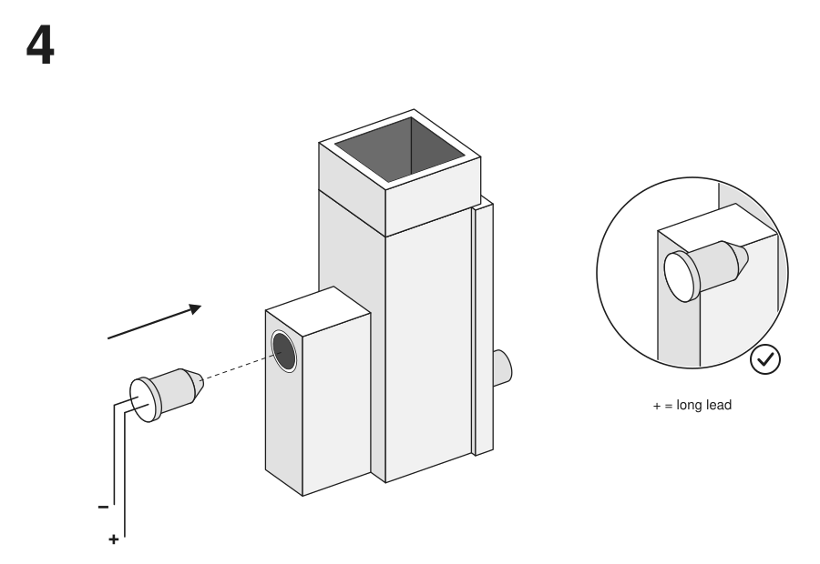
Parts: green LED
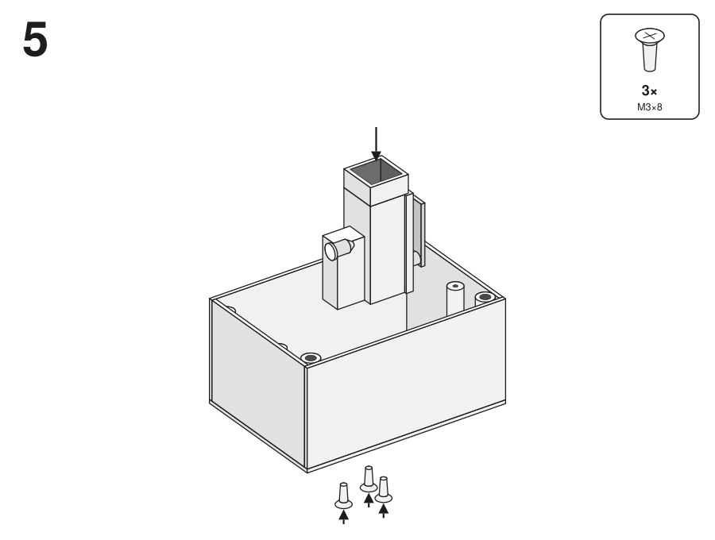
Parts: 3 × M3×8 countersunk
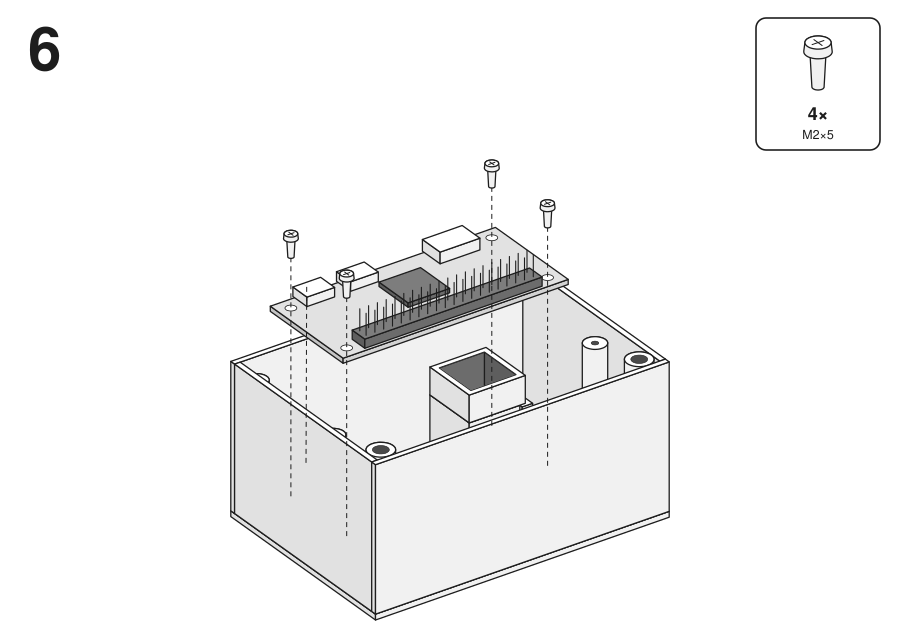
Parts: Raspberry Pi Zero 2 W, 4 × M2×5
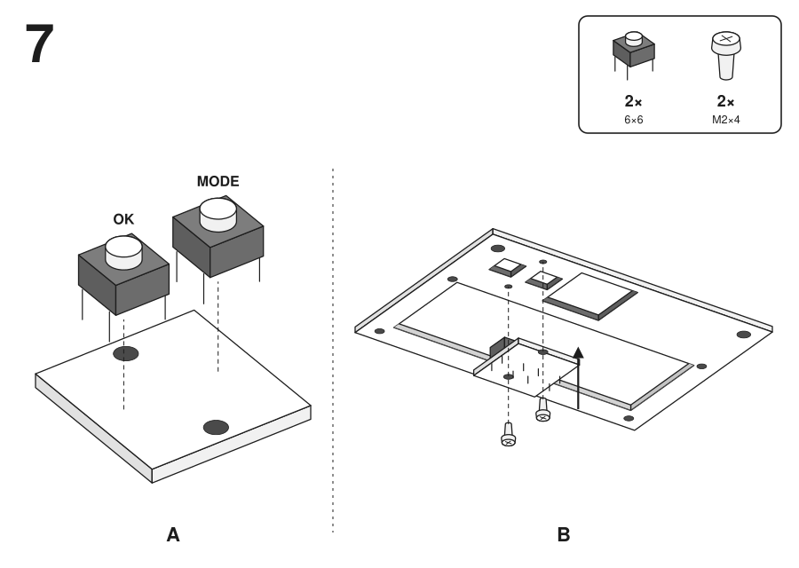
Parts: 2 × tactile switch, button carrier, lid, 2 × M2×4, 4 Dupont wires (cut one end)
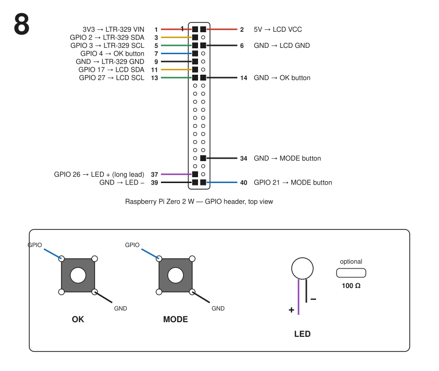
Connect the 14 Dupont wires exactly as in the table. Pin 1 is the header corner nearest the SD card. Odd pins (1, 3, 5 …) are on the inner row, even pins (2, 4, 6 …) on the row along the board edge.
| From | To Raspberry Pi pin |
|---|---|
| LTR‑329 VIN / GND | pin 1 (3.3 V) / any GND |
| LTR‑329 SDA / SCL | pin 3 (GPIO 2) / pin 5 (GPIO 3) |
| LCD VCC / GND | pin 2 (5 V) / any GND |
| LCD SDA / SCL | pin 11 (GPIO 17) / pin 13 (GPIO 27) |
| LED long lead (+) / short lead | pin 37 (GPIO 26) / pin 39 (GND) |
| OK button (left), both wires | pin 7 (GPIO 4) and any GND |
| MODE button (right), both wires | pin 40 (GPIO 21) and any GND |
GND pins: 6, 9, 14, 20, 25, 30, 34, 39; any of them works. The LTR‑329 pin 3Vo stays unconnected. The display uses GPIO 17/27 (the bus 3 set up in 3.3), not the hardware I²C pins 3/5.
Test with the lid still off: if something is wrong, every wire is still easy to reach.
ssh fww@pratico-01.local.i2cdetect -y 1 # must show 29 (light sensor)
i2cdetect -y 3 # must show 27 (display)Each command prints a grid; the number must appear in it. All other cells show --.
If i2cdetect -y 1 is very slow and finds nothing, SDA or SCL is shorted or stuck: switch off and look for a solder bridge or a wire on the wrong pin (Appendix B).
pratico-selftestThe display shows Self test OK and the terminal prints the dark signal and the LED level. Compare with the values of a good build:
| Quantity | Good build (gain 96×, 200 ms) | If not |
|---|---|---|
| Dark signal | 0 – 3 counts | above 20: light is leaking in (cap, SJ1 not cut, gaps) |
| LED level, water cuvette | about 30 – 40 % of full scale (FS) | above 75 %: see the settings in the User Guide; below 20 %: LED reversed, not pushed in, or wrong colour |
| Spread (CV) of the conversions | about 0.03 % | much larger: loose LED or cuvette |
FS (full scale) = sensor counts ÷ 65 535. The sensor saturates near 60 000 counts (92 % FS).
Download the test script and run it with the firmware's Python:
curl -LO https://raw.githubusercontent.com/LowCostSensor/PRATICO-sensor/main/tools/gpio_test.py
~/.local/share/pipx/venvs/pratico-sensor/bin/python gpio_test.py --seconds 20At the start both buttons must read released. The LED blinks three times and the script reports the light seen by the sensor. Then, for 20 seconds, press OK and MODE: each press must be printed with the right name. When everything passes: sudo poweroff, wait, unplug.
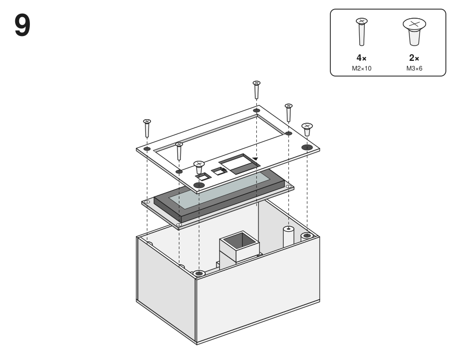
Parts: LCD, lid with buttons, 4 × M2×10, 2 × M3×6
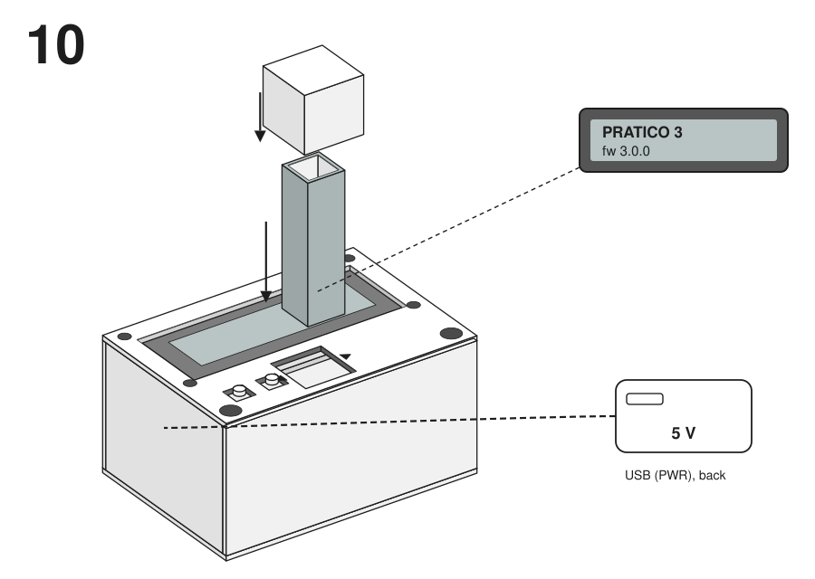
In the field there is no computer: the instrument must start its program by itself when the power bank is plugged in. Connect once more with ssh and type:
pratico-service install
sudo loginctl enable-linger fwwThe first command installs the field program as a service and starts it; the display shows PRATICO 3 fw 3.0.0 and then asks for a blank. The second lets the service start at boot without anyone logging in (needed once per instrument).
Check:
pratico-service statusunit file : /home/fww/.config/systemd/user/pratico3.service
enabled : enabled
active : active
firmware : 3.0.0 config built-in defaultsNow unplug the power, plug it in again, and check that the display starts by itself within about a minute.
The Raspberry Pi has no clock battery: it takes the date and time from the internet whenever it is connected to Wi-Fi. Results record whether the clock was synchronised. A simple way to keep it right in the field is to add a phone hotspot as a second Wi-Fi network:
sudo nmcli dev wifi connect "HOTSPOT-NAME" password "HOTSPOT-PASSWORD"Switch the hotspot on for a minute after powering the instrument and the time is set.
pipx upgrade pratico-sensor
pratico-service installThe calibration and the results in ~/PRATICO_3/ are kept.
Fill in one sheet per instrument and keep it with the instrument's records. An instrument goes to calibration only when every line is ticked.
| Check | Expected | Result | |
|---|---|---|---|
| ☐ | Cuvette slides in without play, cap closes | no wobble | |
| ☐ | SJ1 cut on the LTR‑329 board | green LED on the board is off | |
| ☐ | i2cdetect -y 1 | 29 | |
| ☐ | i2cdetect -y 3 | 27 | |
| ☐ | Self test, dark signal | 0 – 3 counts (max 20) | |
| ☐ | Self test, LED level with water | 30 – 40 % FS (20 – 75 %) | |
| ☐ | OK button / MODE button | correct names in gpio_test | |
| ☐ | Boot service: starts by itself after power-on | display shows Blank: DI water | |
| ☐ | Water blank in the field program | Blank OK 35% FS (20 – 75 %) | |
| ☐ | Instrument labelled with its name | ||
| ☐ | Username and password recorded in a safe place |
Next: calibrate the instrument (User Guide, Section 6).
| Signal | BCM GPIO | Physical pin | Notes |
|---|---|---|---|
| LTR‑329 VIN | 3.3 V | 1 | 3Vo not connected |
| LTR‑329 SDA / SCL | GPIO 2 / GPIO 3 | 3 / 5 | hardware I²C, bus 1, address 0x29 |
| LCD VCC | 5 V | 2 | |
| LCD SDA / SCL | GPIO 17 / GPIO 27 | 11 / 13 | software I²C, bus 3, address 0x27 |
| LED anode (+) | GPIO 26 | 37 | active high; cathode to GND (pin 39) |
| OK button (left) | GPIO 4 | 7 | other side to GND, internal pull-up |
| MODE button (right) | GPIO 21 | 40 | other side to GND, internal pull-up |
| GND | – | 6, 9, 14, 20, 25, 30, 34, 39 | any |
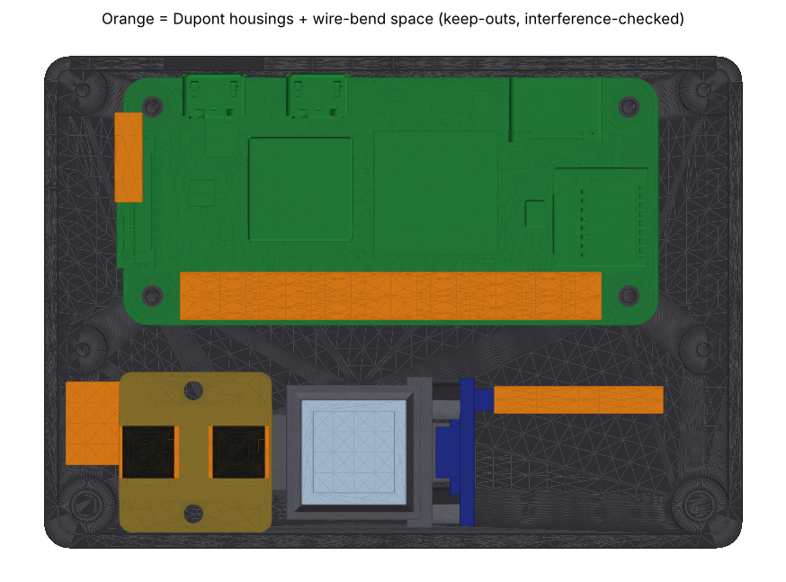
LCD pull-ups. The LCD backpack pulls its data lines up to 5 V while GPIO 17/27 are 3.3 V pins. It works in practice; a bidirectional level shifter removes the risk if you build many units.
| Symptom | Likely cause | Check / fix |
|---|---|---|
| Nothing on the display at power-on | field program not running, LCD wiring, contrast | pratico-service status; i2cdetect -y 3 must show 27; turn the small contrast screw on the back of the LCD |
| Display lit but shows only blocks | contrast, or program not started | turn the contrast screw; wait a minute after power-on |
i2cdetect -y 1 very slow, nothing found | SDA/SCL shorted or stuck low | switch off; look for solder bridges on the LTR‑329 header; check pins 3 and 5 |
i2cdetect -y 1 fast, but no 29 | sensor not powered, SDA/SCL swapped | check VIN → pin 1, GND, SDA → 3, SCL → 5 |
i2cdetect -y 3: no 27, or error “no such file” | bus 3 not configured, LCD wiring | check the two lines in /boot/firmware/config.txt and reboot; LCD SDA → 11, SCL → 13 |
Self test: Light leak/lid | light reaching the sensor with the LED off | cap on; SJ1 cut; no gaps; not in direct sun |
Self test: No signal | LED not lighting | LED reversed (long lead to pin 37), wire on the wrong pin, LED broken |
Self test: Saturated | too much light | cuvette missing; or lower the gain (User Guide, settings) |
| A button always reads pressed | wires on two pins of the same side | move one wire to the diagonal pin |
| Field program does not start after power-on | linger off | sudo loginctl enable-linger fww |
pratico-…: command not found | PATH not updated yet | pipx ensurepath, then log out and in again |
ssh: host not found | Pi not on the network or .local names not resolved | wait 2 min after power-on; use the IP address from the router |
Logs of the field program:
journalctl --user-unit=pratico3 -n 50PRATICO 3 Build Guide, version 1.0, November 2026. Drawings generated from the CAD dimensions. Design, firmware and documentation: github.com/LowCostSensor/PRATICO-sensor (GPL-3.0). If you use PRATICO in published work, please cite: Cirrone, R. G., Boldrini, A., Polvani, A., Arrigucci, M., Liu, X., Galgani, L., Woods, S., & Loiselle, S. A. (2025). Low-Cost Optical Sensing for Nitrate and Phosphate: Advancing Community Freshwater Monitoring. ACS ES&T Water, 5, 6258–6267. https://doi.org/10.1021/acsestwater.5c00314. Contact: Riccardo Gaetano Cirrone, riccardogaetano.cirrone@unipa.it.